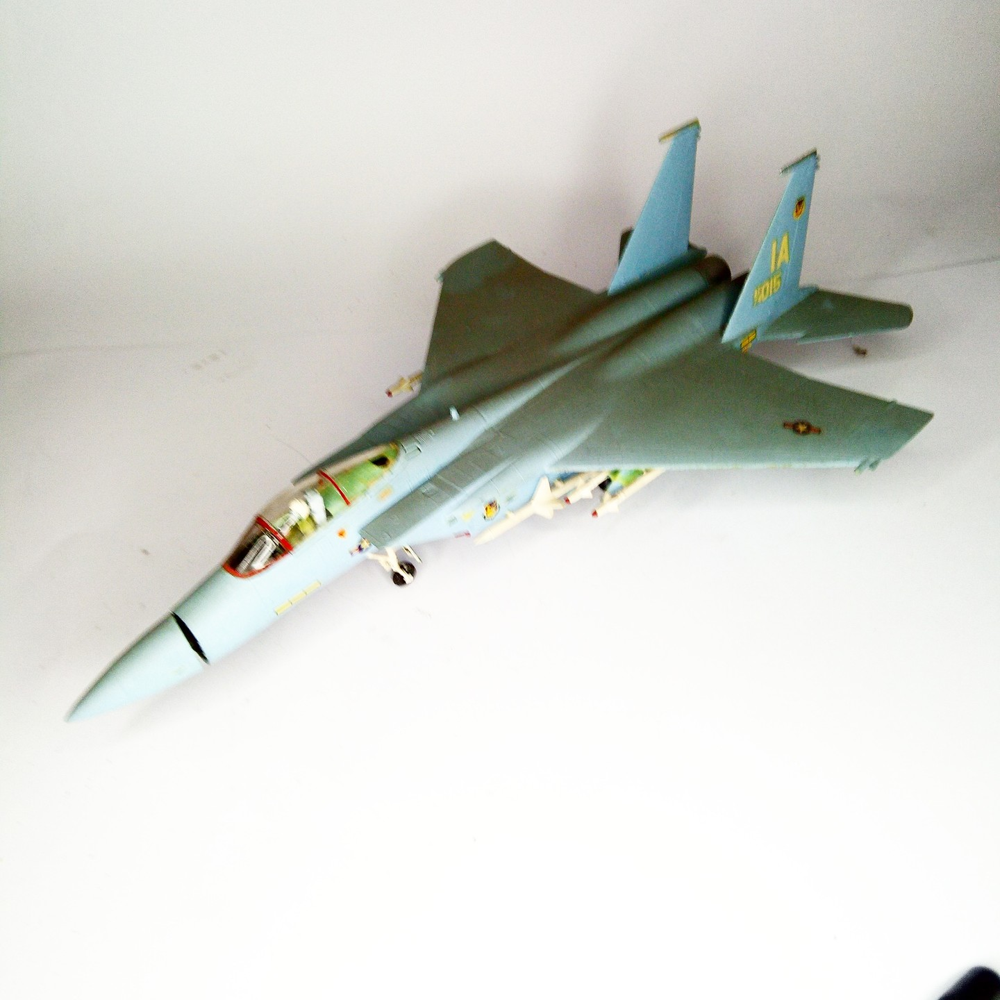

Aerei · scale model archive
McDonnell F15 Eagle
McDonnell F15 Eagle — Kit: Monogram, Scale: 1/72. Very early Monogram kit appeared when no official livery was established yet, radome made openable…

Photo gallery
English description
Very early Monogram kit appeared when no official livery was established yet, radome made openable
#1/72 #Monogram
Descrizione italiana
Very early kit Monogram appeared when no official livrea fu established yet, radome made openable.